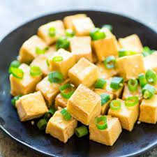

tofu recipes

tofu ingredients and how to make one.
a soft, bland, good looking cheese like
,high in protein content,
made from curdled soybean milk tofu.
*ingredients
- 400g block firm tofu
- 3 tbsp cornflour
- ½ tsp garlic granules
- ½ tsp smoked paprika
- ½ tsp fine sea salt
- ½ tsp ground black pepper
- 2 tbsp vegetable oil
* steps to make one.
- Drain the tofu,
wrap in 4-5 sheets of
kitchen paper, put on a
plate and put something
heavy over the top, like
a wooden chopping board,
or a tray with a few tins
on it. Leave for 20 mins to
drain the excess moisture from
the tofu.
- Mix the cornflour,
garlic, paprika,
salt and pepper in a small bowl.
Unravel the tofu from the paper,
cut in half through the centre,
then cut into triangles, cubes or strips.
- Toss the tofu pieces in the spiced
cornflour to coat all over.
Heat the oil in a large non-stick
frying pan over a medium-high heat.
Fry the tofu for 2-4 mins on each
side until golden, crunchy and browned at the edges.
Smaller cubes will take 2 mins each side, larger
triangles will take 4 mins. Cook in batches
if you need to, adding a little more oil if
the pan gets dry.
- Drain the cooked tofu on kitchen
paper and season with a pinch
more salt before serving.